Мы – первый завод по производству круглых и профильных труб в Калининградской области. Одна из наших ключевых целей - развитие калининградского региона, именно поэтому Балтийский Трубный Завод является членом Балтийского металлообрабатывающего кластера и резидентом Индустриального парка Штальверк
Мы поддерживаем кооперативные связи с ведущими компаниями области и способствуем развитию металлообрабатывающей и строительной отрасли региона.


- оперативные сроки изготовленияСовременное оборудование и собственное производство
- соотношение цены и качестваПроизводственные мощности до 5000 тонн трубного проката
 удобная логистикаЗавод на территории Калининградской области
удобная логистикаЗавод на территории Калининградской области- Собственное производство трубПроизводство из черного металла различной формы и диаметра
- удобная логистикаОбеспечение трубным прокатом Калининградской области и ближнего зарубежья
- Высокие производственные мощностидо 5000 тонн трубного проката в месяц
Продукция и услуги
- Трубы круглыеТолщина стенок от 2 до 4 мм., длина от 4 до 12м.Трубы круглыеКвадратные стальные электросварные трубы общего назначения изготавливаются из углеродистой стали в соответствии с ГОСТ 8639-82, ГОСТ 13663-86, ТУ 1373-013-02949352-2011, ТУ 1373-032-02949352-2013
- Трубы квадратныеТолщина стенок от 2 до 4 мм., длина от 4 до 12м.Трубы круглыеКвадратные стальные электросварные трубы общего назначения изготавливаются из углеродистой стали в соответствии с ГОСТ 8639-82, ГОСТ 13663-86, ТУ 1373-013-02949352-2011, ТУ 1373-032-02949352-2013
- Трубы прямоугольныеТолщина стенок от 2 до 4 мм., длина от 4 до 12м.Трубы круглыеКвадратные стальные электросварные трубы общего назначения изготавливаются из углеродистой стали в соответствии с ГОСТ 8639-82, ГОСТ 13663-86, ТУ 1373-013-02949352-2011, ТУ 1373-032-02949352-2013
- Роспуск рулонной стали на штрипсТолщина стенок от 2 до 4 мм., длина от 4 до 12м.Трубы круглыеКвадратные стальные электросварные трубы общего назначения изготавливаются из углеродистой стали в соответствии с ГОСТ 8639-82, ГОСТ 13663-86, ТУ 1373-013-02949352-2011, ТУ 1373-032-02949352-2013
о нашем производстве в калининграде
Завод был запущен на территории Индустриального парка Штальверк в рекордные сроки: подготовка площадки под производство началась в апреле 2020 года, а уже в октябре была выпущена первая труба от БТЗ. Сегодня мы располагаем всей необходимой документацией (ТУ 24.20.13-001-87103311- 2020) для поставки труб крупнейшим компаниям региона. Завод обладает сертификатом качества, что дает нам право поставлять нашу продукцию и за пределы России.